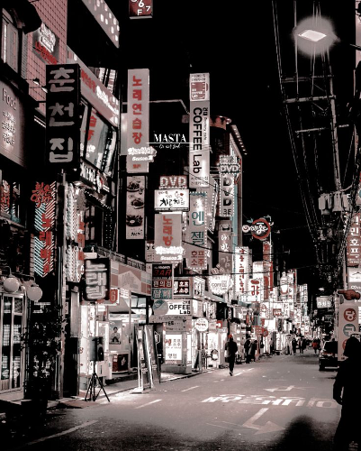

Республика Корея – это небольшая страна в дальневосточном регионе Азии.
Хотя она занимает 109 место по площади в мире,
эта страна – центр экономической, культурной и творческой деятельности в Азии. Корея
была колонизирована Японией в
начале 20го века, а позднее ей пришлось пережить Корейскую войну (1950 – 1953 гг.), но она
добилась поразительного
экономического роста за короткий период известного как «Чудо на реке Ханган».
В наши дни Республика Корея – это индустриальная страна, прочно закрепившая
свои высокие позиции на международной арене.
Ее полупроводники, автомобили, кораблестроение, производство стали и IT-индустрия занимают лидирующие
позиции на мировых
рынках. Эта страна принимала у себя Олимпийские игры 1988 в г. Сеул и Чемпионат мира по
футболу 2002, который проводился
совместно с Японией. В последнее время у корейских телевизионных сериалов, фильмов и музыки становится все
больше и
больше поклонников в странах Азии, создавая феномен, получивший название «Корейская волна».
Новое положение Кореи в
международном сообществе укрепилось еще больше после того, как эта страна, первая из всех стан Азии,
председательствовала на Саммите «Большой двадцатки», а затем принимала Саммит
«Большой двадцатки» в г. Сеул.
Что такое «Халлю»? Это «корейская волна», покорившая мир всего за два десятилетия. Термин появился еще в
90-ые. Тогда
Корея и Китай заключили дипломатические отношения, сильно повлиявшие на различные аспекты жизни. Корейская
индустрия
развлечений попала в телевизоры граждан Китая, а затем и всего мира, чтобы впоследствии доказать свою
уникальность.
Стоит отметить, что «корейская волна» своим появлением обязана либерализации СМИ, которая прокатилась по всей
Азии в
1990-е гг. В 1997 г. центральное национальное телевидение Китая (CCTV) выпустило в эфир корейскую
телевизионную драму
«Что такое любовь?», которая стала большим хитом. В ответ на многочисленные просьбы зрителей, телеканал
вновь выпустил
драму в эфир в 1998 г. и получил второй самый высокий рейтинг в истории китайского телевидения [4]. С тех
пор корейские
телевизионные драмы стали быстро по-
глощать эфирное время на телевизионных каналах в таких странах, как Тайвань, Сингапур, Вьетнам и Индонезия.
Кроме того,
на распространение хал-лю повлиял и экономический кризис в Азии 1997-1998 гг., который привел к ситуации,
когда
азиатские покупатели предпочитали более дешевые корейские программы, так как они составляли четверть от цены
японских и
десятую часть цены гонконгских драм.
Экспорт корейских телевизионных программ возрос настолько сильно, что в
2003 г. они
заработали 37,5 млн долл. по сравнению с 12,7 млн в 1999 г.
Одним из ярких символов «корейской волны» стал поп-исполнитель Сай (Psy), а композиция «Gangnam Style» в его
исполнении
побила все мыслимые рекорды, собрав с 2012 г. свыше 2,5 млрд просмотров на YouTube по всему миру.

Воздействие «корейской волны» можно было наблюдать повсюду. Например, в школе Inlingua в Сингапуре число
студентов,
изучающих корейский язык в 2003 г., увеличилось на 60% по сравнению с 2001 г. из-за интереса, порожденного
корейской
драмой [4]. Даже в нашей стране преподаватели Института восточных культур и античности РГГУ отмечали резкое
увеличение
интереса студентов к корейскому языку, вызванного распространением поп-культуры халлю. Стоит отметить, что в
России для
любителей халлю действует интернет-ресурс на русском
языке.
В связи с таким широким распространением халлю корейский бизнес стал прилагать значительные усилия по
преобразованию
поклонников «корейской волны» в потребителей корейских продуктов и услуг. Корейцы начали понимать, что
культура может
быть столь же прибыльной, как полупроводники или автомобили.
В 2020-м году многие узнали о фильме «Паразиты» режиссёра Пон Чжун Хо. Лента взяла несколько престижных
наград на
кинофестивалях, в том числе «Золотую пальмовую ветвь» и американскую кинопремию «Оскар» за лучший фильм.
Южная Корея
смогла доказать, что не только американское кинопроизводство достойно внимания всего мира. Страна утренней
свежести
произвела фурор и убедила в том, насколько велик ее потенциал, в особенности в индустрии развлечений.